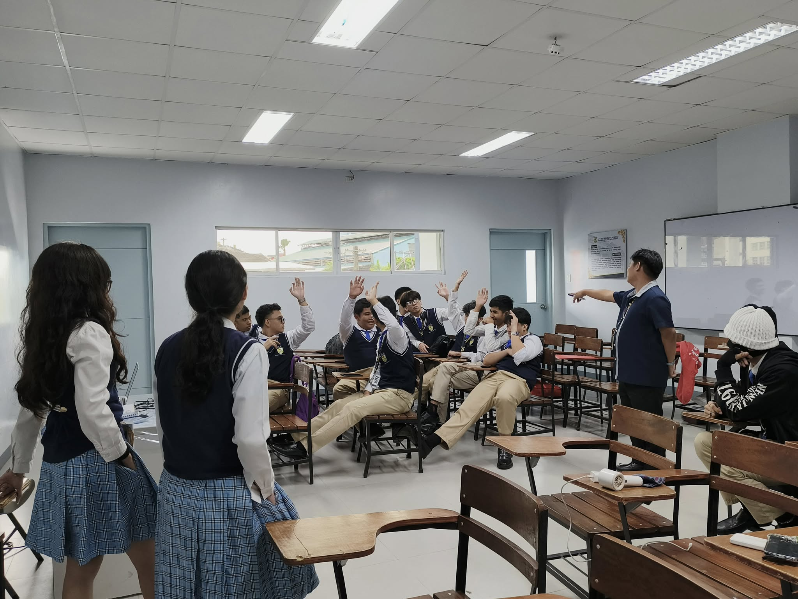

ABOUT US
ILET, Also known as Interactive Learning Enthusiasts of Technology, is a student organization that is exclusive to the ICT strand, also known as the Information and Communication Technology strand.
Just like any other strand specific organization, ILET has events specified to those that are in ICT, most predominantly, the IoT Conference that was hosted inside the SM Mall of Asia that happened last year.
Lastly, it would not be a strand organization without the students that make up the strand itself, whether they are the officers or not, new or old ICT students, they dedicated their future on the programming languages they will learn and the technology that will shape them into their digital freedom.
